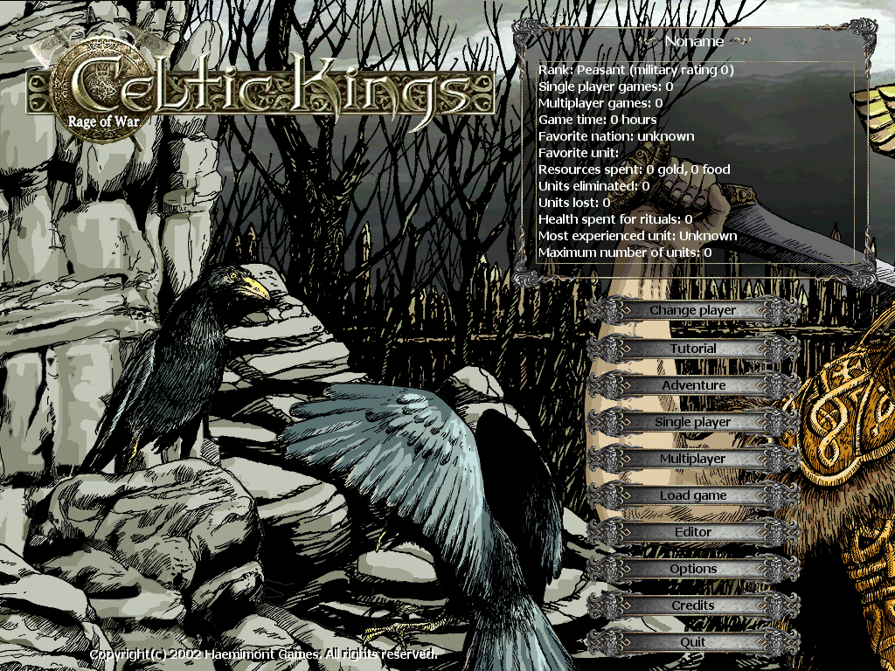
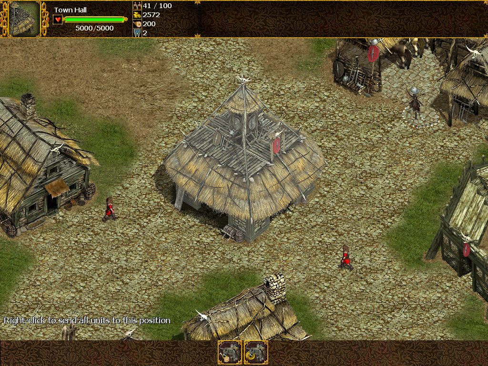

名稱：凱爾特之王：戰爭狂怒／帝國時代：塞爾特之王 (Celtic Kings: Rage of War，英文版)
簡介：Haemimont 2002年出品的即時戰略遊戲，兼具角色扮演遊戲的元素，由Strategy First
代理發行 [待補]。


保護：無
檔案：CelticKingsPatch110.rar = 1.10更新檔
CelticKingsPatch116.rar = 1.16更新檔（先更新至1.10）